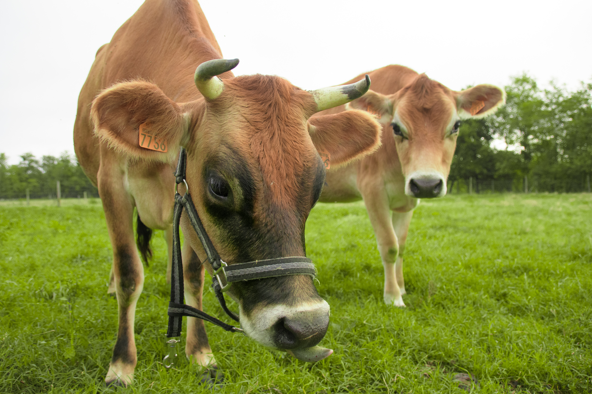
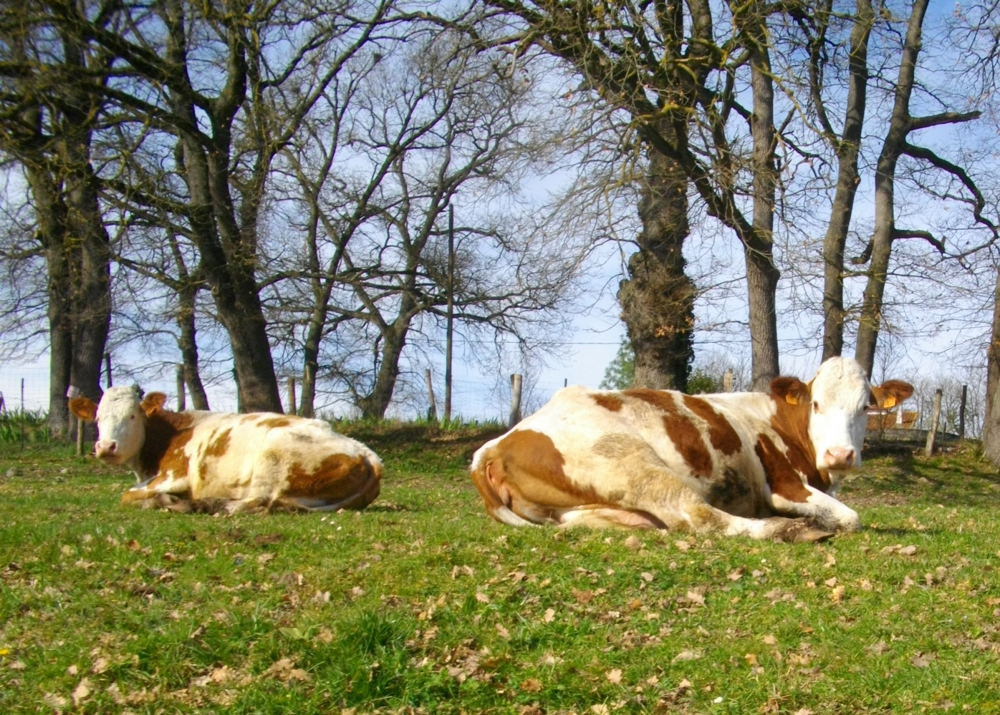
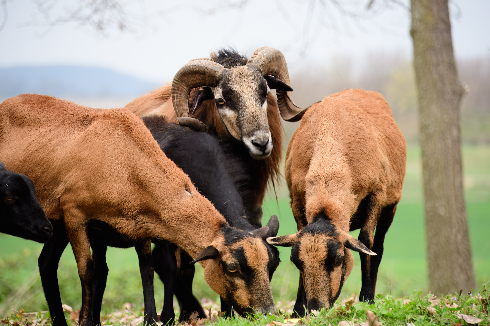

🐄 Nos Vaches

La Jersiaise
Laitière principaleLes Jersiaises, notre principale source de lait, sont très friandes d'herbe. Leur lait est le plus riche, particulièrement en protéines, matières grasses, phosphore et calcium. De plus, ses molécules de matières grasses sont plus petites et plus digestes par rapport aux autres races bovines.
Sa viande est de qualité persillée, c'est-à-dire qu'elle contient de fines infiltrations naturelles de gras à l'intérieur du muscle de la viande. Ce gras fond à la cuisson apportant moelleux, saveur et évite que la viande ne soit sèche.

La Simmental
Race mixteLa Simmental est une vraie race mixte : sa mamelle robuste produit un lait de qualité, tandis que sa viande goûteuse et bien persillée est généreuse. Rustique et adaptable, elle sait faire face aux conditions difficiles tout en restant docile et calme, malgré sa belle ossature.
Limousine, Hereford & Angus
Races allaitantesLes autres vaches sont de races limousine, hereford ou angus, pures ou croisées.
🐑 Nos Brebis

La Tarasconnaise
Rustique des PyrénéesLes Tarasconnaises, réputées pour leur rusticité et leur adaptation aux climats variés, offrent une viande savoureuse et fine, particulièrement appréciée pour son persillage et sa tendreté. Leur chair, riche en saveurs, est souvent associée à une texture fondante, idéale pour les plats traditionnels.
La Camerounaise
Viande fine & goûteuseLes brebis camerounaises se distinguent par leur viande maigre mais goûteuse, adaptée aux régimes locaux et aux conditions climatiques variées. Leur viande, souvent plus ferme, est recherchée pour sa teneur en protéines et son goût très fin et délicatement parfumé, reflétant leur alimentation diversifiée.
🐔 Nos Poules

La Géline de Touraine
Race noire · Œufs d'exceptionLa Géline de Touraine, de couleur noire, est une race robuste du bocage de la région de Tours, qui produit des œufs d'exception : à la coquille solide et au jaune crémeux, riche en oméga-3 et vitamines. Leur saveur intense et leur texture onctueuse en font un atout pour la cuisine, salée ou sucrée. Adaptées à l'élevage en plein air, elles garantissent de septembre à juin une production régulière et de qualité.
Les Poules Rousses
Dociles & productivesLes poules rousses sont des poules dociles et productives. Leur tempérament calme et leur bonne rusticité allient rendement et plaisir d'élevage. Leurs œufs, de taille moyenne à grande, offrent une coquille résistante et un jaune doré nutritif.